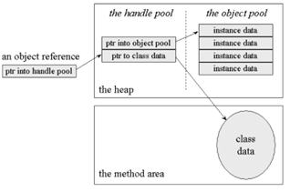

•A class is the blueprint from which the individual objects are created.
• Class is composed of three things: a name, attributes, and operations.
public class Student { } According to the sample given below we can say that the Student object, named objectStudent, has been created out of the Student class. Student objectStudent = new Student();
•An object can be considered a "thing" that can perform a set of related activities.
• The set of activities that the object performs defines the object's behavior.
• For example, the Hand (object) can grip something, or a Student (object) can give their name or address.
•In pure OOP terms an object is an instance of a class.
